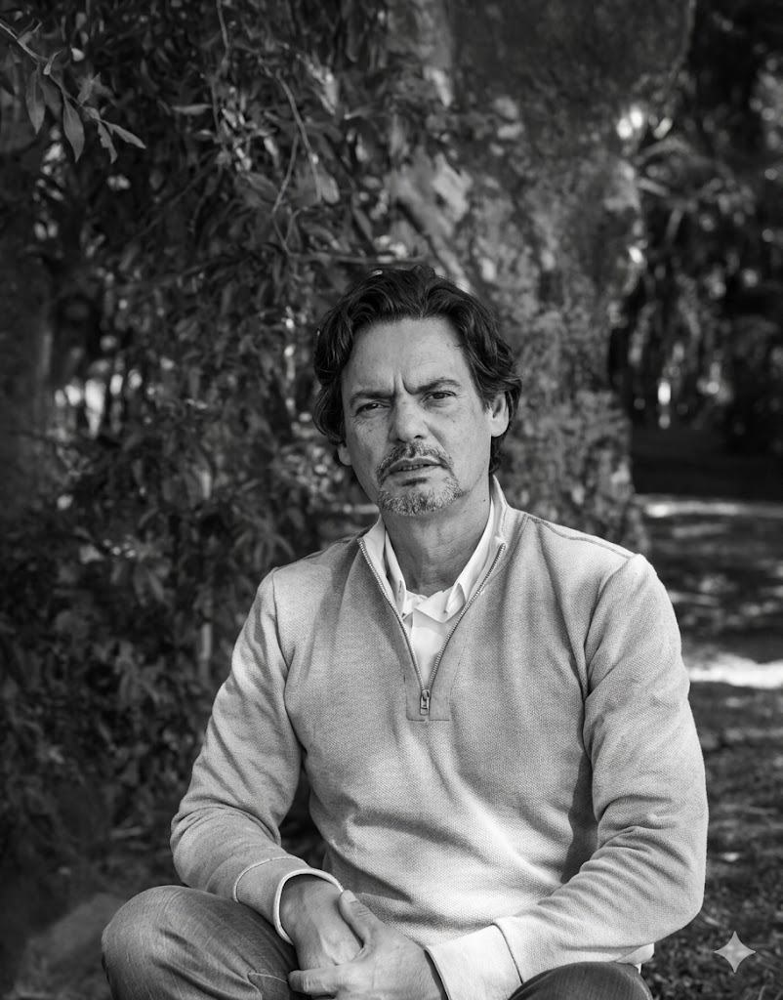

A Filosofia do Volume e do Espaço
Nascido em Portugal e com uma carreira marcada pela fusão da engenharia clássica com a sensibilidade contemporânea, a trajetória de Emanuel Nunes é uma incessante busca por fundir o peso físico da matéria com a fluidez intangível do movimento e do reflexo urbano.
Especialista na manipulação cirúrgica do Aço Inox, do Bronze, do Mármore e em complexos banhos químicos de Níquel, Emanuel desenvolveu uma assinatura autoral focada em criar peças monumentais e figurativas que dialogam com o entorno através de suas superfícies de altíssimo nível de polimento.
Hoje, suas criações dividem-se entre imponentes monumentos integrados à arquitetura corporativa de alto padrão e peças de acervos altamente restritos, consolidando seu nome como um elo vital entre o conceito tridimensional e a paisagem que as acolhe.

Marcos Históricos
Primeiros Contatos com a Forma
Início dos estudos técnicos em metalurgia, desenho industrial e modelagem clássica em solo europeu, assentando as bases para grandes manipulações estruturais.
A Conquista do Espaço Público
Desenvolvimento e entrega de obras monumentais para praças e instituições europeias, testando pela primeira vez os limites de escala das peças.
Domínio do Inox e Banhos de Níquel
Consolidação da técnica de espelhamento absoluto. A luz passa a ser elemento central das esculturas de luxo, atraindo colecionadores privados de prestígio.
Integração com a Arquitetura Premium
Inserção definitiva de grandes esculturas autorais em fachadas e halls de empreendimentos corporativos de ponta e construtoras de vanguarda no Brasil.